Understanding Bell inequality violations on a quantum chip
October 27, 2026
This is the web version of my preprint (PDF, September 2026). The content is the same. It is a draft and has not been peer reviewed; corrections are very welcome at tashiwangchuk@academy.bt.
This is a written record of something I set out to understand for myself: why Einstein thought quantum mechanics was incomplete, how John Bell turned that opinion into a measurable number, and what happens when you measure that number on a quantum computer you can reach over the internet. I derive the local bound $S \le 2$, the quantum correlation $E(a,b) = \cos(a-b)$ and the quantum maximum $2\sqrt2$, explain why a single chip cannot close the loopholes, and report my own test on Tuna-17, a 17-qubit processor in Delft that anyone can use for free: $S = 2.085 \pm 0.012$, a violation by 7.1 standard deviations. Then I try the experiment I actually wanted to do, the triangle network. It does not work, and the reasons turned out to be more interesting than a success would have been.
Contents
- Why I am writing this
- Einstein's objection
- The local bound: why $S \le 2$
- The quantum correlation: $E(a,b) = \cos(a-b)$
- Reaching $S = 2\sqrt2$
- Loopholes, and why a chip cannot close them
- My experiment: CHSH on Tuna-17
- Beyond one source: the triangle network
- Trying it: two machines and two faults
- What I learned
- References
1. Why I am writing this
I teach grade 11 physics in Paro. My undergraduate research was about measuring the electrical conductivity of liquids without touching them, using the way a sample loads a radio-frequency coil. It was careful, practical work, and I liked it. But teaching has reminded me of something I had half forgotten: what I enjoy most is the moment a strange idea becomes concrete enough to compute with.
Bell's theorem is the strangest idea I know that also comes with a number attached. Einstein said quantum mechanics must be missing something. Bell showed that this opinion, made precise, predicts an inequality that experiments can check. The experiments say Einstein was wrong, and the 2022 Nobel Prize in Physics went to three of the people who ran them [1]. What I did not appreciate until this year is that the same experiment can now be run by anyone with a laptop, on a superconducting processor that a university laboratory in Delft makes available for free.
So I ran it. This article is the path from the 1935 argument to my own data, written at the level I wish I had found when I started: undergraduate quantum mechanics, no more. Where I had to simplify, I say so. Where a historical claim is beyond what I could verify, I have marked it in the source file.
2. Einstein's objection
Quantum mechanics describes a system by a state, and the state gives probabilities for measurement outcomes. For a single spin-$\tfrac12$ particle, the state $\ket{0}$ means "spin up along $z$". If I measure the spin along $z$, I get up, every time. If I measure it along $x$, I get up or down with probability one half each, and the theory does not say which. The standard reading is that the theory is not hiding anything: the $x$-outcome is genuinely undetermined before I look.
Einstein, Podolsky and Rosen (EPR) did not accept this reading [2]. Their argument uses two particles. I will give it in the spin version, which is due to Bohm [3, 4] and is what everyone uses now.
Prepare two spins in the state
send one to Alice and one to Bob, far apart (Figure 1). If Alice measures her spin along $z$ and finds up, the state collapses to $\ket{00}$, so Bob's spin is now certainly up along $z$. If she instead measures along $x$, the same state can be rewritten as $(\ket{++} + \ket{--})/\sqrt{2}$ with $\ket{\pm} = (\ket{0} \pm \ket{1})/\sqrt2$, so her outcome fixes Bob's $x$-spin with certainty instead.
EPR's reasoning then goes like this. Alice is far away from Bob, so nothing she does can disturb his particle. Yet by choosing what to measure, she can predict with certainty either Bob's $z$-spin or his $x$-spin. Their criterion was: if you can predict a quantity with certainty without disturbing the system, that quantity is an "element of reality". So both Bob's $z$-spin and his $x$-spin must be real, definite quantities, fixed before anyone measures. Quantum mechanics has no state in which both are definite. Therefore, EPR concluded, quantum mechanics is incomplete: there must be extra variables, not in the wavefunction, that fix those values in advance.
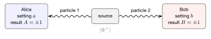
I find it useful to state the hidden assumption plainly, because Bell's whole contribution is to test it. The assumption is locality: what happens at Bob's station does not depend on what Alice chooses to do. Einstein called the alternative "spooky action at a distance". Bell's later essay on Bertlmann's socks is the clearest explanation I have read of why the EPR correlations by themselves are not spooky, and why the trouble only starts when you look at several measurement directions at once [5]. Mermin's Physics Today article does the same job with a gadget instead of socks [6].
For thirty years this was treated as a matter of taste. Both sides predicted the same results for the experiment above. Bell's insight in 1964 was that they do not predict the same results once each side has a choice of two settings [7].
3. The local bound: why $S \le 2$
Here is the experiment in the form proposed by Clauser, Horne, Shimony and Holt (CHSH) [8]. In each run, Alice picks one of two settings, $a_0$ or $a_1$, and Bob picks one of two, $b_0$ or $b_1$. Each records an outcome $A = \pm1$ or $B = \pm1$. After many runs we compute the four correlators
which equal $+1$ when the outcomes always agree, $-1$ when they always disagree, and $0$ when they are unrelated. Then we form the single number
Now suppose Einstein is right. Then in each run the particles carry some hidden information, call it $\lambda$, fixed at the source. Locality says Alice's outcome is a function of her setting and $\lambda$ only, $A(a,\lambda)$, and Bob's is $B(b,\lambda)$. (If the outcomes were random even given $\lambda$, we could fold that randomness into $\lambda$ itself, so nothing is lost by taking them deterministic.) Fix one $\lambda$ and write $A_0 = A(a_0,\lambda)$, $A_1 = A(a_1,\lambda)$, $B_0$, $B_1$ similarly. Each is $+1$ or $-1$. Consider
Since $B_0$ and $B_1$ are each $\pm1$, either they are equal, in which case $B_0 - B_1 = 0$ and $B_0 + B_1 = \pm2$, or they are opposite, in which case $B_0 + B_1 = 0$ and $B_0 - B_1 = \pm 2$. Either way exactly one bracket survives and it equals $\pm2$, so $s(\lambda) = \pm 2$ for every $\lambda$. Figure 2 shows all sixteen possibilities.
The observed $S$ is the average of $s(\lambda)$ over whatever distribution the source produces. An average of numbers that are each $\pm2$ lies between $-2$ and $+2$. That is the CHSH inequality:
Nothing about quantum mechanics was used. The bound follows from locality and the existence of the four values $A_0, A_1, B_0, B_1$ in each run, which is what "pre-existing elements of reality" means once you write it down.
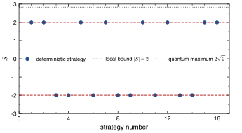
4. The quantum correlation: $E(a,b) = \cos(a-b)$
Now the quantum side. Let Alice and Bob each measure spin along a direction in the $x$–$z$ plane at angle $a$ or $b$ from the $z$ axis. The corresponding observable is
whose eigenvalues are $\pm 1$, matching the outcome labels. The correlator is the expectation value of the product,
The four expectation values are quick to compute in the state (1):
and $\langle X \otimes Z \rangle = 0$ by the same calculation. The state $(\ket{01} - \ket{10})/\sqrt2$ is orthogonal to $\ket{\Phi^+}$, which is why the last two vanish. Putting these in,
This is the whole content of entanglement for our purpose: the correlation depends only on the angle between the two measurement directions, and it can be perfect ($\pm1$) for any common direction, not just $z$.
5. Reaching $S = 2\sqrt{2}$
Choose the settings shown in Figure 3a:
Then by (5),
and (2) gives
The minus sign in $S$ is placed exactly on the one pair of directions that are $135^\circ$ apart, so all four terms add. Tsirelson proved that $2\sqrt2$ is the largest value any quantum state and any measurements can give [9]. Figure 3b shows how $S$ depends on Bob's angle when Alice keeps $0$ and $\pi/2$; the violation is not a knife edge but a broad window around $\pi/4$, which matters for a noisy experiment.
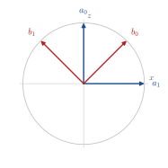
(a) The four measurement directions.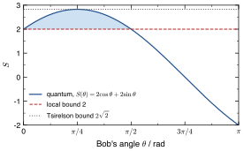
(b) $S$ as a function of Bob's angle.So the two pictures disagree by a finite, measurable amount: no local model can exceed 2, quantum mechanics predicts 2.83. Freedman and Clauser measured a violation with photons from a calcium cascade in 1972 [10], Aspect and co-workers did it with settings switched while the photons were in flight in 1982 [11], and Zeilinger's group enforced strict spacelike separation in 1998 [12]. The 2022 Nobel Prize citation reads "for experiments with entangled photons, establishing the violation of Bell inequalities and pioneering quantum information science" [1].
6. Loopholes, and why a chip cannot close them
A violation of (4) only rules out local hidden variables if the experiment actually satisfies the assumptions that went into the derivation. Two of them can fail in practice, and the history of Bell tests is largely the history of closing them.
The locality loophole. The derivation assumed Bob's outcome cannot depend on Alice's setting. If Alice's choice is made early enough, or the stations are close enough, a signal travelling at the speed of light could carry her setting to Bob's particle before it is measured, and a local model with that signal could imitate quantum correlations. To rule this out, each setting must be chosen, and each outcome recorded, outside the light cone of the other station's choice (Figure 4). This requires distance and speed: Aspect's 1982 experiment switched settings during the photons' flight [11]; Weihs and co-workers used 400 m of separation and fast random switching [12].
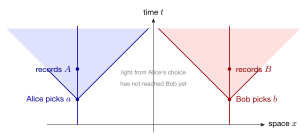
The detection loophole. Real detectors miss particles. If only a fraction of pairs is detected, and we compute $S$ from the detected ones, we are assuming that the detected pairs are a fair sample of all pairs. A local model in which the hidden variable also decides whether a particle is detected can produce an apparent violation from the surviving sample [13]. The clean fix is to count every emitted pair and assign a definite outcome to "no click"; with that rule a violation needs the detection efficiency above about 83% for the CHSH inequality with a maximally entangled state [13] (Figure 5). Photon experiments only reached this in 2015 [14, 15], and the same year a test with electron spins in diamond 1.3 km apart closed both loopholes at once [16].
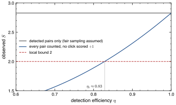
Why a single quantum processor cannot do this. On Tuna-17 the two qubits I use are neighbours, a few millimetres apart. The gates that set the measurement direction take tens of nanoseconds and readout takes on the order of a microsecond, while light covers 30 cm every nanosecond. Everything on one side is deep inside the light cone of everything on the other. There is no distance to exploit and no fast random switch: the "choice" of setting is a rotation gate compiled into the circuit before it runs. So the locality loophole is wide open, not slightly open. As for detection, every shot on a superconducting processor returns a $0$ or a $1$, so there is no missing-click problem in the usual sense, but readout errors do flip outcomes, and one has to be honest that error mitigation is a form of post-processing.
This does not make the exercise pointless. It changes what it tests. A CHSH violation on a chip does not test local realism; it tests whether the device can create and read out entanglement well enough to reproduce the quantum prediction. That is a statement about the hardware, and a useful one. It is also worth knowing that superconducting qubits can close the locality loophole when they are put in separate cryostats connected by a 30 m cold microwave link, which the ETH Zurich group demonstrated in 2023 with more than a million trials [17]. The limitation is the single chip, not the technology.
7. My experiment: CHSH on Tuna-17
7.1 Circuit
I used Qiskit [18] and Quantum Inspire, the cloud platform of QuTech in Delft, which gives free access to Tuna-17, a 17-qubit superconducting processor with tunable couplers [19, 20]. The circuit is in Figure 6. A Hadamard gate on the first qubit followed by a controlled-NOT prepares $\ket{\Phi^+}$. Then each qubit is rotated about the $y$ axis by minus its measurement angle, $R_y(-a)$ on Alice's qubit and $R_y(-b)$ on Bob's, and both are measured in the computational basis. The rotation turns the direction $\hat{A}(a)$ into $Z$, so a $Z$ measurement after it is the same as measuring $\hat{A}(a)$ before it. I checked this numerically against equation (5) for random angles before running anything.
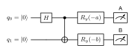
Four circuits, one per setting pair, give the four correlators in (2). I also ran a sweep with Alice fixed at $a = 0$ and Bob's angle stepped from $0$ to $2\pi$, to see the cosine of equation (5) directly rather than only at four points. Each of the 29 circuits was run for 20,000 shots. The transpiler placed the pair on physical qubits 0 and 1, which are directly coupled, so the circuit needs a single two-qubit gate.
Two practical notes, because they cost me a day. The platform accepts at most five circuits per batch and five batches in the queue at once, so the 29 circuits went in six batches submitted as slots freed. More importantly, the jobs inside a batch are created concurrently, so their identifiers are not in the order the circuits were submitted. I only noticed because a deliberate test circuit came back with the wrong number of bits. Every circuit is stored on the platform as source code, so I rebuilt the assignment by matching each returned job against the code that produced it, and I now verify that mapping automatically before reading any result. Three of the sweep angles coincide with CHSH settings, giving three pairs of physically identical circuits run in different batches; they agree within $0.8$ standard deviations, which is the evidence that the repaired bookkeeping is right and that the device was stable across the run.
The correlator from counts is $E = (N_{00} + N_{11} - N_{01} - N_{10})/N$, and its statistical error is $\sqrt{(1 - E^2)/N}$, which is the standard deviation of a $\pm1$ variable averaged $N$ times. The error on $S$ adds the four in quadrature.
7.2 Results
Figure 7a shows the sweep. The measured correlation follows $\cos b$ in shape, but with a clearly reduced amplitude: the largest value is $0.77$ rather than $1$. Table 1 and Figure 7b give the four CHSH correlators. The result is
which is above the local bound by 7.1 standard deviations and $26\%$ below the quantum maximum. The one mild outlier among the four correlators is $E(a_0,b_1)$, smaller in magnitude than its partners by about twice the combined statistical error.
Most of that shortfall is captured by one number. If the ideal state is mixed with unpolarised noise, every correlator is scaled by a common visibility $V$, so $E(a,b) = V\cos(a-b)$ and $S = 2\sqrt2\,V$. My $S$ gives $V = 2.085/2\sqrt2 = 0.74$, and fitting the sweep by least squares gives a compatible $V = 0.76$.
The two values are close but not equal, and with 20,000 shots per point the statistical error on each is under $0.005$, so the difference is real. It is worth saying what fails rather than rounding it away. Fitting the sweep to a pure scaled cosine gives a reduced chi-squared of about $120$, so that model is decisively rejected. Allowing two more parameters, a phase offset and a constant shift, brings it to about $23$, with an offset angle of $4.1 \pm 0.1$ degrees and a shift of $-0.05$. In other words the measurement axes are slightly rotated from where I asked them to be, and the correlator is pulled a little negative at every angle. Bob's qubit also shows a readout bias: its single-party average is about $-0.12$ across all four CHSH settings, where the ideal value is zero. None of this threatens the violation, which needs only that $S$ exceed 2, but it does mean the device is not simply an ideal Bell pair behind a depolarising channel. Calibration error and readout asymmetry are part of the picture, and a more careful experiment would characterise them first.
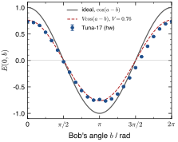
(a) Correlation sweep, Alice at $a=0$.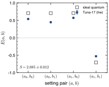
(b) The four CHSH correlators.Table 1. CHSH correlators and $S$ measured on Tuna-17 (20,000 shots per setting pair). Errors are statistical. The last column is the ideal value scaled by the fitted visibility $V = 0.74$.
| Setting pair | Ideal | Measured | Error | $V \times$ ideal |
|---|---|---|---|---|
| $E(a_0,b_0)$ | $+0.707$ | $+0.539$ | $0.006$ | $+0.52$ |
| $E(a_0,b_1)$ | $+0.707$ | $+0.447$ | $0.006$ | $+0.52$ |
| $E(a_1,b_0)$ | $+0.707$ | $+0.571$ | $0.006$ | $+0.52$ |
| $E(a_1,b_1)$ | $-0.707$ | $-0.529$ | $0.006$ | $-0.52$ |
| $S$ | $2.828$ | $2.085$ | $0.012$ | $2.09$ |
7.3 Checking that the data do not signal
There is a check I did not know to do until I read the recent work of Bednorz and collaborators. Locality implies something weaker than the CHSH bound that can be tested directly: Alice's own outcome statistics must not change when Bob changes his setting. In symbols, $\langle A \rangle$ measured with $b_0$ must equal $\langle A \rangle$ measured with $b_1$, up to statistical noise, and the same for Bob. This is the no-signalling condition. Quantum mechanics obeys it exactly. A real chip need not, because operating on one qubit can disturb a neighbour, an effect called crosstalk. Rybotycki and co-workers ran CHSH tests on IBM devices with thirty million shots per setting and found small but statistically significant signalling on several qubit pairs [21]; a follow-up on four generations of IBM processors found it strongest on the older devices and absent, within error, on the newest [22].
In my data the four signalling differences are all at most $0.016$ in magnitude, with a statistical uncertainty of $0.010$ on each, so the largest is $1.6$ standard deviations and all are consistent with zero. With 20,000 shots I can only bound signalling at the percent level, which is far coarser than the effect Rybotycki and co-workers resolved with thirty million shots per setting. So this is a null result at low sensitivity, not evidence that Tuna-17 is free of crosstalk. I record it because a Bell violation accompanied by signalling would not mean what it appears to mean, and because the check costs nothing once the data are in hand.
7.4 What the number means
My $S$ is above 2 by seven standard deviations, and a quarter below what quantum mechanics allows. Given Section 6, I read this as a statement about the device rather than about nature: Tuna-17 prepares a two-qubit entangled state and measures it in rotated bases with a combined visibility of 0.74. That is comfortably enough to exclude every local model of the correlations it produces, and far from the fidelity a stricter test would need. It is not a test of local realism, and I would not describe it as one to a student.
What the exercise gave me is something different. The derivation in Sections 3 to 5 became a script I could run, and the gap between $2.83$ and $2.085$ turned into a concrete question about one piece of hardware. A single number, the visibility, accounts for that whole gap, and I could check it two independent ways in my own data. That is the part I did not expect to enjoy.
8. Beyond one source: the triangle network
The question I wanted to pursue is what happens when there is more than one source. In the experiment above, one source feeds both Alice and Bob. In a network, several independent sources each feed a pair of parties, and a party in the middle may measure its two particles jointly (Figure 8). This changes the mathematics in a way I did not expect. The set of correlations a local model can produce is no longer convex: mixing two allowed correlations with a coin flip is not allowed, because the coin would be a shared variable correlating sources that are supposed to be independent. The usual machinery of Bell inequalities, which relies on that convexity, largely stops working. The review by Tavakoli and co-workers is the map of this territory [23].
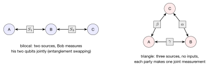
The triangle is the case that caught me. Three parties, three independent sources, and each party makes a single fixed measurement on the two qubits it receives; there are no settings to choose at all. When that measurement is the "Elegant Joint Measurement" of Gisin, a symmetric four-outcome measurement, the outcome pattern was conjectured in 2017 to have no classical explanation. The conjecture was only proved in October 2025, by a computer-assisted method called inflation [24]. But the proof holds for the ideal, noise-free pattern. No one yet has a proof that survives realistic noise, which is exactly what stopped the only superconducting attempt: Bäumer, Gisin and Tavakoli ran this triangle on IBM hardware in 2021 and could not decide whether their noisy data were nonlocal [25]. Since then a conjectured inequality tailored to the triangle has appeared [26], a six-photon experiment has violated it [27], and a bilocal test on the current generation of IBM chips has succeeded [28]. The triangle has not been retried on a chip.
8.1 What the test actually asks for
The conjectured inequality of Bäumer and co-workers [26] is built from the probability $s_{111}$ that all three parties report the same outcome, minus a penalty $\Delta_1$ for how unevenly the probabilities are spread within each class of outcomes. The test is
The ideal quantum pattern gives $s_{111} = 25/64 = 0.391$ with $\Delta_1 = 0$. A device producing nothing but noise gives $s_{111} = 4/64 = 0.063$. So the whole experiment lives in the gap between $0.063$ and $0.391$, and the threshold sits close to the top of it.
Three details matter for anyone trying this. The circuit is three entangled pairs and three joint measurements, and it cannot be made cheaper: I checked that the Elegant Joint Measurement provably needs two entangling gates, so nine is the floor for the whole circuit. There are no measurement settings to choose, so the entire experiment is a single circuit run many times. And because the classical set is not convex, the data may not be symmetrised by averaging over relabellings, which is the one post-processing step that would otherwise make $\Delta_1$ small for free.
9. Trying it: two machines and two faults
I ran the triangle on Tuna-17 and on Cepheus-1-108Q, a 108-qubit Rigetti processor reached through the Open Quantum platform [29]. Neither passed. Getting to a result that was even wrong for interesting reasons took longer than everything else in this article, because on both machines some gates were not doing what the instruction said.
9.1 A gate that ignores its own setting
The joint measurement needs a controlled-phase gate turned by a quarter turn. On Tuna-17 the assembled circuit returned an almost perfectly flat distribution, while its individual pieces looked healthy: three entangled pairs prepared together gave correlations of $-0.84$ to $-0.89$ against an ideal $-1$, and a single pair gave $0.91$.
The test that settled it is small. Feed the joint measurement a definite input and two of its four outcomes become impossible. Figure 9 shows what happened. Built with the controlled-phase gate, the forbidden outcomes came back at $0.24$ each, which is exactly the flat distribution predicted if that gate were secretly a plain controlled-$Z$. Built instead out of controlled-NOT gates, the same measurement gave $0.02$ and $0.02$ for the forbidden outcomes and $0.49$ and $0.47$ for the allowed ones, which is correct. As a final check, a controlled-phase gate turned by a half turn, the one angle at which it coincides with controlled-$Z$, agreed with controlled-$Z$ exactly. The gate accepts an angle and ignores it.
9.2 Rotations that never happen
On Cepheus the failure was louder. A single entangled pair worked well, agreeing $93\%$ of the time, but the triangle returned nearly deterministic bits, with five of the six qubits frozen. Noise does not do that; noise pushes everything toward one half.
I asked six qubits to rotate through six different angles and measured each one. The requested probabilities ran from $0.07$ to $0.85$. Every measured value came back near $0.01$ (Figure 9, right). The qubits had not moved at all. A follow-up test showed the same for every adjustable rotation, while the fixed gates, the ones with no angle to supply, all behaved correctly to within a per cent.
So I rebuilt the whole experiment from fixed gates only, expressing the controlled-phase gate through $T$ gates. This is exact rather than approximate, and it costs twelve entangling gates instead of nine.
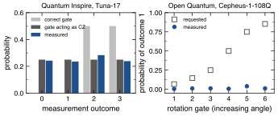
9.3 The result
With fixed gates only, the circuit finally ran as written: all six qubits came back close to even, as they should. Figure 10 and Table 2 give the outcome, from 20,000 runs with readout errors measured on the same qubits and corrected.
The quantum structure is plainly there. The measured $s_{111} = 0.225$ sits far above the $0.063$ that pure noise would give, and the three outcome classes are ordered as the theory says. It is also, as far as I can tell, better than the $0.281$ reported for the only previous attempt on superconducting hardware [25, 27]. On Tuna-17 the same circuit gave only $0.042$, below the noise floor.
And it fails the test, badly. The penalty term is $\Delta_1 = 0.40$ where the ideal is zero, which leaves
Table 2. The triangle test. The ideal pattern and the pure-noise floor are exact; the two measured rows are readout-corrected. $I_1$ must exceed $0.289$ to pass.
| $s_{111}$ | $s_{112}$ | $s_{123}$ | $I_1$ | |
|---|---|---|---|---|
| ideal quantum | $0.391$ | $0.141$ | $0.469$ | $0.391$ |
| Cepheus-1-108Q | $0.225$ | $0.423$ | $0.352$ | $0.031$ |
| Tuna-17 | $0.042$ | $0.667$ | $0.290$ | $-0.203$ |
| pure noise | $0.063$ | $0.563$ | $0.375$ | $0.063$ |
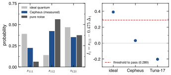
9.4 Why it fails, as far as I can tell
The failure is not a shortage of signal. It is the penalty term, which should be about $0.015$ at this sample size and came out at $0.40$, more than twenty times larger.
A large penalty means the probabilities are uneven within each class of outcomes. My first guess was that the qubits simply differ from one another, which they visibly do: the readout errors I measured across the six ranged from half a per cent to seven per cent. So I put those measured, unequal error rates into a simulation of the same circuit. The penalty stayed at $0.016$. Uneven qubits do not explain it.
What is left is coherent error: a systematic misalignment that tilts the distribution in a structured way rather than blurring it. Ordinary noise models, which assume errors are random, cannot produce it, and that is why every forecast I made from such a model was too optimistic. I have not characterised it further, and I am not going to pretend otherwise.
If that reading is right, it says something useful about the inequality itself. Its penalty term is far more sensitive to calibration error than to noise, and the papers proposing it discuss noise. A device can be good enough to show the quantum signal clearly, as Cepheus was, and still fail by a wide margin on symmetry alone. That is a concrete obstacle for anyone planning such an experiment, and it argues for hardware with error-suppression techniques that convert coherent errors into random ones.
10. What I learned
Four things stayed with me.
First, the local bound is a theorem about four numbers that are each $\pm1$. Once written as (3) it is two lines, and the depth is entirely in the assumption that all four exist at once.
Second, the quantum calculation is equally short, and the reason it beats the bound is the sign structure of $\cos(a-b)$: three directions $45^\circ$ apart and one $135^\circ$ apart, with the minus sign on the last.
Third, on a chip the interesting statement is not that local realism is false but that this device makes and reads entanglement this well, and here is a check that it does not leak information between its qubits.
Fourth, and this one I did not expect to be the main lesson: a number coming out of a quantum computer is a claim about a long chain of translation, and the chain can be broken quietly. Twice I had results that looked like physics and were arithmetic, and twice the thing that caught it was a test with a prediction sharp enough to fail: a probability that should be exactly zero, a qubit that should be exactly half. Averages would not have caught either. I now build that kind of test before trusting anything.
What I still want is the triangle. The pieces are ready and portable, and what is missing is hardware whose gates I can trust and whose coherent errors can be suppressed rather than merely averaged over.
Acknowledgements
I am grateful to QuTech, TU Delft and TNO for making Tuna-17 freely available through Quantum Inspire, and to the four Dutch companies that built it with them. The Cepheus measurements were run on the public plan of the Open Quantum platform [29], whose terms ask that work using it say so. The views expressed here are my own. All code, the raw measurement counts and the job identifiers behind every number in this article are available on request, and I intend to report both gate faults to the platforms concerned.
References
- The Royal Swedish Academy of Sciences, The Nobel Prize in Physics 2022, press release (2022). nobelprize.org
- A. Einstein, B. Podolsky and N. Rosen, "Can quantum-mechanical description of physical reality be considered complete?", Phys. Rev. 47, 777 (1935). doi
- D. Bohm, Quantum Theory (Prentice-Hall, Englewood Cliffs, NJ, 1951).
- D. Bohm and Y. Aharonov, "Discussion of experimental proof for the paradox of Einstein, Rosen, and Podolsky", Phys. Rev. 108, 1070 (1957). doi
- J. S. Bell, "Bertlmann's socks and the nature of reality", J. Phys. Colloques 42, C2-41 (1981). doi
- N. D. Mermin, "Is the moon there when nobody looks? Reality and the quantum theory", Phys. Today 38(4), 38 (1985). doi
- J. S. Bell, "On the Einstein Podolsky Rosen paradox", Physics Physique Fizika 1, 195 (1964). doi
- J. F. Clauser, M. A. Horne, A. Shimony and R. A. Holt, "Proposed experiment to test local hidden-variable theories", Phys. Rev. Lett. 23, 880 (1969). doi
- B. S. Cirel'son, "Quantum generalizations of Bell's inequality", Lett. Math. Phys. 4, 93 (1980). doi
- S. J. Freedman and J. F. Clauser, "Experimental test of local hidden-variable theories", Phys. Rev. Lett. 28, 938 (1972). doi
- A. Aspect, J. Dalibard and G. Roger, "Experimental test of Bell's inequalities using time-varying analyzers", Phys. Rev. Lett. 49, 1804 (1982). doi
- G. Weihs, T. Jennewein, C. Simon, H. Weinfurter and A. Zeilinger, "Violation of Bell's inequality under strict Einstein locality conditions", Phys. Rev. Lett. 81, 5039 (1998). doi
- A. Garg and N. D. Mermin, "Detector inefficiencies in the Einstein-Podolsky-Rosen experiment", Phys. Rev. D 35, 3831 (1987). doi
- M. Giustina, M. A. M. Versteegh, S. Wengerowsky et al., "Significant-loophole-free test of Bell's theorem with entangled photons", Phys. Rev. Lett. 115, 250401 (2015). doi
- L. K. Shalm, E. Meyer-Scott et al., "Strong loophole-free test of local realism", Phys. Rev. Lett. 115, 250402 (2015). doi
- B. Hensen, H. Bernien, A. E. Dréau et al., "Loophole-free Bell inequality violation using electron spins separated by 1.3 kilometres", Nature 526, 682 (2015). doi
- S. Storz et al., "Loophole-free Bell inequality violation with superconducting circuits", Nature 617, 265 (2023). doi
- Qiskit contributors, Qiskit: an open-source framework for quantum computing (2026). github.com/Qiskit/qiskit
- QuTech, Quantum Inspire: superconducting backends (2026). quantum-inspire.com
- QuTech, Quantum Inspire adds new open-architecture quantum processor: Tuna-17 (2026). qutech.nl
- T. Rybotycki, T. Białecki, J. Batle and A. Bednorz, "Violation of no-signaling on a public quantum computer", Adv. Quantum Technol. 8, 2400661 (2025). doi · arXiv:2409.11348
- A. Bednorz, J. Batle, T. Białecki and J. K. Korbicz, "Closing objectivity loophole in Bell tests on a public quantum computer" (2026). arXiv:2506.08940
- A. Tavakoli, A. Pozas-Kerstjens, M.-X. Luo and M.-O. Renou, "Bell nonlocality in networks", Rep. Prog. Phys. 85, 056001 (2022). arXiv:2104.10700
- V. Gitton and R. Renner, "The Elegant Joint Measurement is non-classical in the triangle network" (2025). arXiv:2510.15143
- E. Bäumer, N. Gisin and A. Tavakoli, "Demonstrating the power of quantum computers, certification of highly entangled measurements and scalable quantum nonlocality", npj Quantum Inf. 7, 117 (2021). doi · arXiv:2009.14028
- E. Bäumer, V. Gitton, T. Kriváchy, N. Gisin and R. Renner, "Exploring the local landscape in the triangle network", Phys. Rev. A 111, 052453 (2025). doi · arXiv:2405.08939
- N.-N. Wang, C. Zhang, H. Cao et al., "Experimental genuine quantum nonlocality in the triangle network", Phys. Rev. Lett. (2026). arXiv:2401.15428
- L. Adachi and L. B. Ho, "Measurement geometry as a resource for certifying network nonlocality" (2026). arXiv:2607.04656
- Quantum Rings, Open Quantum: quantum computing for all (2026). openquantum.com